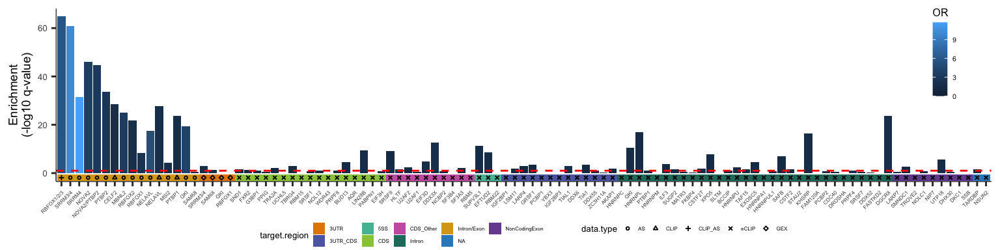
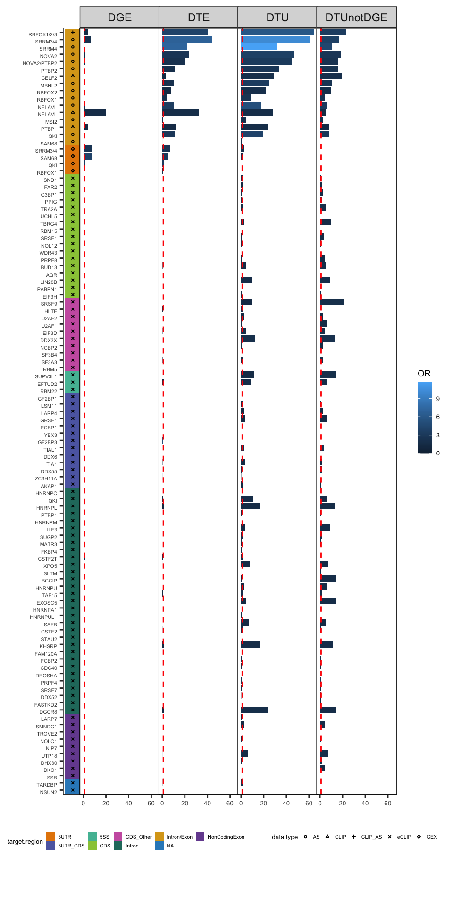
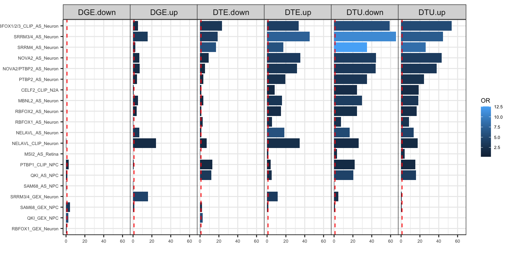

suppressPackageStartupMessages({
library(tidyverse)
library(rtracklayer)
library(ggrepel)
library(biomaRt)
library(readxl)
library(cowplot)
library(paletteer)
})
source("code/fisher_overlap.R")Figure 3 - RBP Enrichments
Load Data
tableS3.gene <- read_tsv("output/tables/TableS3_v3.tsv.gz")Rows: 102319 Columns: 17
── Column specification ────────────────────────────────────────────────────────
Delimiter: "\t"
chr (5): isoform_id, gene_id, gene_name, condition_1, condition_2
dbl (9): DTU_dIF, DTU_pval, DTU_qval, DTE_log2FC, DTE_pval, DTE_qval, DGE_lo...
lgl (3): DTU, DTE, DGE
ℹ Use `spec()` to retrieve the full column specification for this data.
ℹ Specify the column types or set `show_col_types = FALSE` to quiet this message.RBP Enrichments
Celine’s RBP Targets
brainRBPs = read.csv("data/RBP_Data/CSVs/RBP_targets_v5.csv", header=TRUE);
brainRBPs = dplyr::select(brainRBPs, -c(MGI.symbol, ENSMUSG))
encodeRBPs = read.csv("data/RBP_Data/CSVs/RBP_targets_ENCODE.csv", header=TRUE);
encodeRBPs = encodeRBPs %>% filter(cell.type=="HepG2") %>% rename("hgnc_symbol"="HGNC.symbol", "ensembl_gene_id"="ENSG")
rbp_targets = rbind(brainRBPs,encodeRBPs)
mart = useMart("ENSEMBL_MART_ENSEMBL","mmusculus_gene_ensembl")
f = listFilters(mart); a = listAttributes(mart)
featuresToGet = c("ensembl_gene_id", "external_gene_name", "hsapiens_homolog_ensembl_gene", "hsapiens_homolog_associated_gene_name","hsapiens_homolog_orthology_type")
mouseHumanHomologs = getBM(attributes = featuresToGet,mart = mart)
human_mouse_bg = mouseHumanHomologs %>% as_tibble() %>% filter(hsapiens_homolog_orthology_type == "ortholog_one2one") %>% dplyr::select("hsapiens_homolog_ensembl_gene") %>% pull()genesets = list("DTU"= tableS3.gene %>% filter(DTU) %>% mutate(gene_id = substr(gene_id,1,15)) %>% dplyr::select(gene_id) %>% pull(),
"DTE" = tableS3.gene %>% filter(DTE) %>% mutate(gene_id = substr(gene_id,1,15)) %>% dplyr::select(gene_id) %>% pull(),
"DGE" = tableS3.gene %>% filter(DGE) %>% mutate(gene_id = substr(gene_id,1,15)) %>% dplyr::select(gene_id) %>% pull(),
"DTUnotDGE" = tableS3.gene %>% filter(DTU,DGE_pval>.05) %>% mutate(gene_id = substr(gene_id,1,15)) %>%
dplyr::select(gene_id) %>% pull())
DTU.bg = tableS3.gene %>% mutate(gene_id = substr(gene_id,1,15)) %>% dplyr::select(gene_id) %>% pull() %>% unique()
df_fisher = data.frame()
for(i in 1:length(genesets)) {
for(this_dataset in unique(na.omit(rbp_targets$dataset.id))) {
this_rbp = rbp_targets %>% filter(dataset.id == this_dataset) %>% mutate(target = paste0(RBP, "_", data.type, "_", cell.type)) %>% dplyr::select(target) %>% unique() %>% pull()
target_genes = rbp_targets %>% filter(dataset.id == this_dataset) %>% dplyr::select(ENSG) %>% pull()
if(grepl("Human",this_rbp)) {
this_or = ORA(genesets[[i]], target_genes, DTU.bg, DTU.bg)
} else {
this_or = ORA(genesets[[i]], target_genes, DTU.bg, human_mouse_bg)
}
df_fisher = rbind(df_fisher, data.frame(set = names(genesets)[[i]], dataset = this_dataset, target = this_rbp, t(this_or)))
}
}
df_fisher$OR = as.numeric(df_fisher$OR)
df_fisher$Fisher.p[df_fisher$OR<1] = 1
df_fisher$Fisher.p = p.adjust(as.numeric(df_fisher$Fisher.p),'fdr')
order.brainRBPs = read_excel("data/RBP_Data/curatedRBPs_order.xlsx") %>% as_tibble()
order.Encode.TarReg = read_excel("data/RBP_Data/ENCODE_vanNostrand_NatMeth2016_Fig2a_order.xlsx", sheet=2);
order.Encode.TarReg = order.Encode.TarReg %>% filter(name %in% df_fisher$target)
order = rbind(order.brainRBPs, order.Encode.TarReg)
df_fisher$target = factor(df_fisher$target, levels=order$name)
df_fisher$org = "Mouse"; df_fisher$org[grep("Human",df_fisher$target)] = "Human"
df_fisher$data.type = rbp_targets$data.type[match(df_fisher$dataset, rbp_targets$dataset.id)]
df_fisher$cell.type = rbp_targets$cell.type[match(df_fisher$dataset, rbp_targets$dataset.id)]
df_fisher$target.region = order$target.region[match(df_fisher$target, order$name)]
df_fisher$label = signif(df_fisher$OR,1)
df_fisher$label[df_fisher$Fisher.p>.05] = ''Figure 3H
Fig3H.1=ggplot(df_fisher %>% filter(set=="DTU"),aes(x=target, y= -log10(Fisher.p), fill=OR)) +
geom_bar(stat='identity',position = position_dodge2()) + theme_bw() +
geom_hline(yintercept = 1,lty='dashed',size=0.5,color='red') + labs(y='Enrichment\n(-log10 q-value)',x='') +
theme(axis.text.x = element_blank(), axis.ticks.x=element_blank(), axis.text.y=element_text(size=5), axis.title.y=element_text(size=7),
legend.key.size=unit(0.3,'cm'),
legend.text=element_text(size=4),
legend.title=element_text(size=6),
plot.margin=unit(c(5,5,0,5),"pt"), legend.position=c(0.95,0.75),
panel.grid.major=element_blank(), panel.grid.minor=element_blank(), panel.border=element_blank(), axis.line=element_line(color="black", size=0.2))
Fig3H.2=ggplot(df_fisher %>% filter(set=="DTU"),aes(x=target, label=target.region)) +
geom_tile(aes(y=factor(1),fill=target.region)) +
geom_point(aes(y=factor(1), shape=data.type),position=position_dodge2(width=1),size=0.5) + scale_shape_manual(values = c(1:9)) +
scale_x_discrete(labels=sapply(strsplit(levels(df_fisher$target), "_"), "[[",1)) +
theme_bw() +
theme(axis.text.y = element_blank(),
axis.ticks.y=element_blank(),
axis.text.x = element_text(angle=45,vjust=1, hjust=1, size=3),
legend.key.size=unit(0.25,'cm'), legend.text=element_text(size=3), legend.title=element_text(size=5),
plot.margin=unit(c(-20,5,5,5),"pt"), legend.position=c(0.5,-6.8), legend.box="horizontal", legend.direction="horizontal",
panel.grid.major=element_blank(), panel.grid.minor=element_blank(), panel.border=element_blank(), axis.line=element_line(color="black", size=0.2)) +
labs(x='', y='') + paletteer::scale_fill_paletteer_d("rcartocolor::Vivid") + guides(fill=guide_legend(order=1))
plot_grid(Fig3H.1,Fig3H.2, align="v", ncol=1, axis="lr", rel_heights=c(5,1))
pdf(file="output/figures/Fig3/Fig3H.2_byTargetRegion.pdf",width = 10,height=2.5)
plot_grid(Fig3H.1,Fig3H.2, align="v", ncol=1, axis="lr", rel_heights=c(4,1))
dev.off()quartz_off_screen
2 Figure S4B
FigS4B.1 = ggplot(df_fisher,aes(x=factor(target, levels=rev(levels(target))), y= -log10(Fisher.p), fill=OR)) +
# scale_x_discrete(labels=df_fisher$RBP) +
geom_bar(stat='identity',position = position_dodge2()) + coord_flip() + theme_bw() + facet_grid(~set) +
geom_hline(yintercept = 1,lty=2,color='red') + labs(y='Enrichment (-log10 q-value)',x='') +
theme(axis.text.y = element_blank(), axis.ticks.y=element_blank(), axis.text.x=element_text(size=5), axis.title.x=element_text(size=7),
panel.grid.major=element_blank(), panel.grid.minor=element_blank(), axis.line=element_line(color="black", size=0.2),
plot.margin=unit(c(5,5,5,-18),"pt"),
legend.text=element_text(size=5), legend.title=element_text(size=7), legend.key.size=unit(0.4,'cm'),
panel.spacing=unit(-0.1, "lines")) +
labs(x='', y='')
FigS4B.2 = ggplot(df_fisher %>% filter(set=="DTU"),aes(x=factor(target, levels=rev(levels(target))), label=target.region)) +
# geom_tile(aes(y=factor(1),fill=data.type)) +
geom_tile(aes(y=factor(1),fill=target.region)) +
# geom_point(aes(y=factor(1), shape=target.region),position=position_dodge2(width=1),size=0.5) + scale_shape_manual(values = c(1:9)) +
geom_point(aes(y=factor(1), shape=data.type),position=position_dodge2(width=1),size=0.5) + scale_shape_manual(values = c(1:9)) +
# scale_x_discrete(labels=df_fisher$RBP) +
scale_x_discrete(labels=sapply(strsplit(rev(levels(df_fisher$target)), "_"), "[[",1)) +
theme_bw() +
theme(axis.text.x = element_blank(),
axis.ticks.x=element_blank(),
axis.text.y = element_text(angle=0,vjust=1, hjust=1, size=4),
legend.position="none",
plot.margin=unit(c(5,0,5,5),"pt"),
panel.grid.major=element_blank(), panel.grid.minor=element_blank(), panel.border=element_blank(), axis.line=element_line(color="black", size=0.2)) +
labs(x='', y='') + paletteer::scale_fill_paletteer_d("rcartocolor::Vivid") + guides(fill=guide_legend(order=1)) +
coord_flip()
legend = get_legend(FigS4B.2 + theme(legend.position=c(2.7,0.8), legend.box="horizontal", legend.direction="horizontal",
legend.text=element_text(size=4), legend.title=element_text(size=5), legend.key.size=unit(0.25,'cm')))
plot_grid(FigS4B.2,FigS4B.1, legend, align="h", nrow=2, axis="bt", rel_widths=c(1,4.5), rel_heights=c(10,1))
pdf("output/figures/supplement/FigS4B_wEncode_byTargetRegion.pdf", height=10, width=5)
plot_grid(FigS4B.2,FigS4B.1, legend, align="h", nrow=2, axis="bt", rel_widths=c(1,4.5), rel_heights=c(10,1))
dev.off()quartz_off_screen
2 FigureS4C
genesets = list("DTU.up"= tableS3.gene %>% filter(DTU&DTU_dIF>0) %>% mutate(gene_id = substr(gene_id,1,15)) %>% dplyr::select(gene_id) %>% pull(),
"DTU.down"= tableS3.gene %>% filter(DTU&DTU_dIF<0) %>% mutate(gene_id = substr(gene_id,1,15)) %>% dplyr::select(gene_id) %>% pull(),
"DTE.up" = tableS3.gene %>% filter(DTE&DTE_log2FC>0) %>% mutate(gene_id = substr(gene_id,1,15)) %>% dplyr::select(gene_id) %>% pull(),
"DTE.down" = tableS3.gene %>% filter(DTE&DTE_log2FC<0) %>% mutate(gene_id = substr(gene_id,1,15)) %>% dplyr::select(gene_id) %>% pull(),
"DGE.up" = tableS3.gene %>% filter(DGE&DGE_log2FC>0) %>% mutate(gene_id = substr(gene_id,1,15)) %>% dplyr::select(gene_id) %>% pull(),
"DGE.down" = tableS3.gene %>% filter(DGE&DGE_log2FC<0) %>% mutate(gene_id = substr(gene_id,1,15)) %>% dplyr::select(gene_id) %>% pull()
)
DTU.bg = tableS3.gene %>% mutate(gene_id = substr(gene_id,1,15)) %>% dplyr::select(gene_id) %>% pull() %>% unique()
df_fisher = data.frame()
for(i in 1:length(genesets)) {
for(this_dataset in unique(na.omit(rbp_targets$dataset.id))) {
this_rbp = rbp_targets %>% filter(dataset.id == this_dataset) %>% mutate(target = paste0(RBP, "_", data.type, "_", cell.type)) %>% dplyr::select(target) %>% unique() %>% pull()
target_genes = rbp_targets %>% filter(dataset.id == this_dataset) %>% dplyr::select(ENSG) %>% pull()
if(grepl("Human",this_rbp)) {
this_or = ORA(genesets[[i]], target_genes, DTU.bg, DTU.bg)
} else {
this_or = ORA(genesets[[i]], target_genes, DTU.bg, human_mouse_bg)
}
df_fisher = rbind(df_fisher, data.frame(set = names(genesets)[[i]], dataset = this_dataset, target = this_rbp, t(this_or)))
}
}
df_fisher$OR = as.numeric(df_fisher$OR)
df_fisher$Fisher.p[df_fisher$OR<1] = 1
df_fisher$Fisher.p = p.adjust(as.numeric(df_fisher$Fisher.p),'fdr')
order.brainRBPs = read_excel("data/RBP_Data/curatedRBPs_order.xlsx") %>% as_tibble()
order.Encode.TarReg = read_excel("data/RBP_Data/ENCODE_vanNostrand_NatMeth2016_Fig2a_order.xlsx", sheet=2)
order.Encode.TarReg = order.Encode.TarReg %>% filter(name %in% df_fisher$target)
order = rbind(order.brainRBPs, order.Encode.TarReg)
df_fisher$target = factor(df_fisher$target, levels=order$name)
df_fisher$org = "Mouse"; df_fisher$org[grep("Human",df_fisher$target)] = "Human"
df_fisher$data.type = rbp_targets$data.type[match(df_fisher$dataset, rbp_targets$dataset.id)]
df_fisher$cell.type = rbp_targets$cell.type[match(df_fisher$dataset, rbp_targets$dataset.id)]
df_fisher$target.region = order$target.region[match(df_fisher$target, order$name)]
df_fisher$label = signif(df_fisher$OR,1)
df_fisher$label[df_fisher$Fisher.p>.05] = ''FigS4C = ggplot(df_fisher %>% filter(target %in% order.brainRBPs$name),aes(x=factor(target, levels=rev(levels(target))), y= -log10(Fisher.p), fill=OR)) +
geom_bar(stat='identity',position = position_dodge2()) + coord_flip() + theme_bw() + facet_grid(~set) +
geom_hline(yintercept = 1,lty=2,color='red') + labs(y='Enrichment (-log10 q-value)',x='') +
theme(axis.text.y=element_text(size=5), axis.text.x=element_text(size=5), axis.title.x=element_text(size=7),
axis.line=element_line(color="black", size=0.2),
plot.margin=unit(c(5,5,5,-18),"pt"),
legend.text=element_text(size=5), legend.title=element_text(size=7), legend.key.size=unit(0.4,'cm'),
panel.spacing=unit(-0.1, "lines")) +
labs(x='', y='')
FigS4C
pdf("output/figures/supplement/FigS4C_brainRBPs_splitUpDown.pdf", height=4, width=8)
FigS4C
dev.off()quartz_off_screen
2 sessionInfo()R version 4.1.3 (2022-03-10)
Platform: x86_64-apple-darwin17.0 (64-bit)
Running under: macOS Big Sur/Monterey 10.16
Matrix products: default
BLAS: /Library/Frameworks/R.framework/Versions/4.1/Resources/lib/libRblas.0.dylib
LAPACK: /Library/Frameworks/R.framework/Versions/4.1/Resources/lib/libRlapack.dylib
locale:
[1] en_US.UTF-8/en_US.UTF-8/en_US.UTF-8/C/en_US.UTF-8/en_US.UTF-8
attached base packages:
[1] stats4 stats graphics grDevices utils datasets methods
[8] base
other attached packages:
[1] paletteer_1.5.0 cowplot_1.1.1 readxl_1.4.1
[4] biomaRt_2.50.3 ggrepel_0.9.2 rtracklayer_1.54.0
[7] GenomicRanges_1.46.1 GenomeInfoDb_1.30.1 IRanges_2.28.0
[10] S4Vectors_0.32.4 BiocGenerics_0.40.0 forcats_0.5.2
[13] stringr_1.5.0 dplyr_1.0.10 purrr_0.3.4
[16] readr_2.1.2 tidyr_1.2.0 tibble_3.1.8
[19] ggplot2_3.3.6 tidyverse_1.3.2
loaded via a namespace (and not attached):
[1] googledrive_2.0.0 colorspace_2.0-3
[3] rjson_0.2.21 ellipsis_0.3.2
[5] XVector_0.34.0 fs_1.5.2
[7] rstudioapi_0.14 farver_2.1.1
[9] bit64_4.0.5 AnnotationDbi_1.56.2
[11] fansi_1.0.3 lubridate_1.8.0
[13] xml2_1.3.3 codetools_0.2-18
[15] cachem_1.0.6 knitr_1.40
[17] jsonlite_1.8.0 Rsamtools_2.10.0
[19] broom_1.0.1 dbplyr_2.2.1
[21] png_0.1-7 compiler_4.1.3
[23] httr_1.4.4 backports_1.4.1
[25] assertthat_0.2.1 Matrix_1.4-1
[27] fastmap_1.1.0 gargle_1.2.0
[29] cli_3.4.1 htmltools_0.5.3
[31] prettyunits_1.1.1 tools_4.1.3
[33] gtable_0.3.1 glue_1.6.2
[35] GenomeInfoDbData_1.2.7 rappdirs_0.3.3
[37] Rcpp_1.0.9 Biobase_2.54.0
[39] cellranger_1.1.0 vctrs_0.5.1
[41] Biostrings_2.62.0 xfun_0.32
[43] rvest_1.0.3 lifecycle_1.0.3
[45] restfulr_0.0.15 XML_3.99-0.10
[47] googlesheets4_1.0.1 zlibbioc_1.40.0
[49] scales_1.2.1 vroom_1.5.7
[51] hms_1.1.2 MatrixGenerics_1.6.0
[53] parallel_4.1.3 SummarizedExperiment_1.24.0
[55] rematch2_2.1.2 prismatic_1.1.1
[57] yaml_2.3.5 curl_4.3.2
[59] memoise_2.0.1 stringi_1.7.8
[61] RSQLite_2.2.16 BiocIO_1.4.0
[63] filelock_1.0.2 BiocParallel_1.28.3
[65] rlang_1.0.6 pkgconfig_2.0.3
[67] matrixStats_0.62.0 bitops_1.0-7
[69] evaluate_0.16 lattice_0.20-45
[71] labeling_0.4.2 GenomicAlignments_1.30.0
[73] htmlwidgets_1.5.4 bit_4.0.4
[75] tidyselect_1.2.0 magrittr_2.0.3
[77] R6_2.5.1 generics_0.1.3
[79] DelayedArray_0.20.0 DBI_1.1.3
[81] pillar_1.8.1 haven_2.5.1
[83] withr_2.5.0 KEGGREST_1.34.0
[85] RCurl_1.98-1.8 modelr_0.1.9
[87] crayon_1.5.1 utf8_1.2.2
[89] BiocFileCache_2.2.1 tzdb_0.3.0
[91] rmarkdown_2.16 progress_1.2.2
[93] grid_4.1.3 blob_1.2.3
[95] reprex_2.0.2 digest_0.6.29
[97] munsell_0.5.0